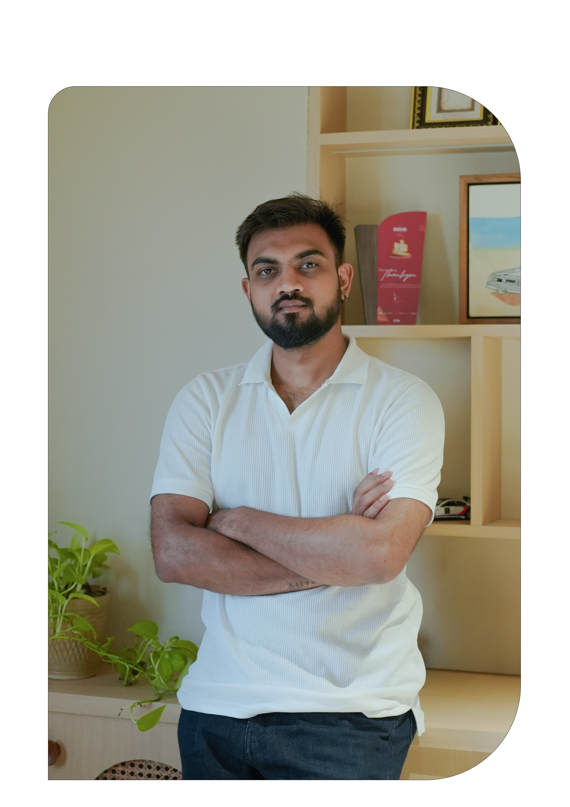

PORTFOLIO
DEEP KHUNT
VIDEO EDITOR | VISUAL STORYTELLER

I tell stories through motion, light, and emotion. From engineering to weddings—my journey moved from profession to passion. With 4 years of experience, I tell stories through frames and emotions, crafting wedding films as an editor, cinematographer, and filmmaker shaped by honesty, rhythm, and real moments. Every wedding I film is a canvas of unscripted emotions, subtle details, and fleeting glances. My approach is simple—observe deeply, feel genuinely, and translate moments into stories that live forever.
I don't just film weddings or corporate stories—I understand people, purpose, and emotion behind every frame. From intimate wedding moments to structured brand narratives, I know how to adapt the story to its soul.
With experience across weddings and corporate shoots, I bring a balanced approach—creative storytelling with professional precision. Every film is crafted with intention, rhythm, and clarity.
Whether it's a couple's once-in-a-lifetime day or a brand's vision, my focus remains the same: authentic moments, strong visuals, and stories that connect.
This pre-wedding film was shot amidst the lush greenery and soft rains of Lonavala during monsoon season. The edit follows a minimal, cinematic style with a focus on clean transitions and subtle storytelling. The color grading leans into natural tones — enhancing the greens, soft skies, and monsoon mist while keeping skin tones warm and balanced. The music is soft and soulful, complementing the couple's quiet chemistry and the poetic mood of the season. Every frame is designed to feel calm, romantic, and timeless — just like the monsoon itself.
This full-day pre-wedding shoot blends two beautiful worlds — the grace of traditional attire and the ease of modern, western styling — all set against the calm and open backdrop of a serene beach. Shot in soft natural light from sunrise to sunset, the film captures quiet intimacy, laughter, and effortless chemistry. The edit embraces a minimal, cinematic look, with muted color tones, clean frames, and subtle transitions that let the setting and emotions speak for themselves. From classic ethnic silhouettes in the golden morning light to relaxed western outfits by the waves, this film celebrates love in its most natural and balanced form — rooted, yet free.
Filmed in the breathtaking landscapes of Himachal Pradesh, this pre-wedding shoot captures the raw charm of Manali — from snow-dusted peaks to pine-covered paths. The couple's chemistry was framed against nature's grandeur, giving the film a dreamy, intimate feel. The edit is clean and emotion-focused, with a soft cinematic tone. Color grading highlights the cool blues and earthy hues of the mountains, while maintaining natural light and minimal styling. Smooth pacing, ambient sounds, and warm storytelling bring out the couple's bond in the purest form.
Set against the sacred ghats and timeless lanes of Mathura and Vrindavan, this pre-wedding shoot is a soulful blend of tradition, culture, and romance. Inspired by the divine love of Radha-Krishna, every frame carries the essence of spiritual connection and heritage.
The edit follows a rooted, poetic style, using soft transitions, warm earthy tones, and classical background music that enhances the sacred atmosphere. The couple is captured in traditional attire, surrounded by temple bells, flower markets, and soft morning light — keeping the aesthetic authentic and pure.
A visual ode to love that feels both eternal and deeply personal.
This film tells a love story that began in school uniforms — shared notebooks, innocent glances, and years of growing up together. From carefree teenage memories to a heartfelt proposal, this journey captures the rare magic of childhood love that stood the test of time. The edit is warm and nostalgic, with soft color tones, gentle transitions, and music that echoes the innocence of first love. Every frame reflects familiarity, comfort, and the beauty of choosing each other again and again.
This wedding film tells the story of an Indian couple who returned from the US to celebrate their union with family and traditions close to their hearts. At the center of the story is the bride's mother and cousins — their emotional speeches, quiet blessings, and shared laughter form the soul of this film.
The edit follows a simple and minimal approach, letting genuine emotions and moments guide the pace. Muted warm tones and soft color grading reflect the intimate, homely atmosphere. The music is light and soulful, woven gently around natural dialogues and ambient sound, allowing the storytelling to feel organic and honest.
This film is a quiet celebration — not just of love, but of roots, relationships, and return.
This same-day edit captures the essence of the wedding day from the bride's side — filled with raw emotions, heartfelt rituals, and quiet moments of joy and reflection. The edit is crisp and emotionally paced, crafted within hours to be screened the same evening. Every frame is chosen to reflect the bride's journey — from morning preparations to the final farewell. Soft color tones, clean transitions, and soulful music bring together a film that feels personal, intimate, and deeply moving.
This wedding wasn't just about vows — it was about laughter, inside jokes, and dancing till the last beat. Capturing the wedding of close friends made every frame more personal, more alive. The edit blends playful pacing with emotional storytelling, using vibrant color tones, dynamic transitions, and music that mirrors the energy of the day.
From heartfelt speeches to spontaneous dance floor moments, this film is a tribute to friendship, joy, and love that feels like home. It's not just a wedding film — it's a memory you'll want to replay with the same people, again and again.
This engagement film feels like a scene from a fairytale — soft light, gentle smiles, and a story that unfolds with grace and ease. The edit is simple yet dreamy, with light transitions, pastel color tones, and minor effects that enhance without distracting. Every frame is designed to feel warm, romantic, and timeless — capturing the couple's bond in its most natural form.
From quiet glances to shared laughter, this film celebrates love that feels effortless and real. It's not just an engagement highlight — it's a visual promise of forever, told with heart and simplicity.
This engagement film opens with the calm resonance of a shloka, setting a divine tone for a union blessed by tradition and faith. The edit is subtle and graceful, using traditional instrumental music, warm temple tones, and minimal styling to let the purity of the ceremony shine.
Every frame reflects reverence, joy, and the sacred bond between two souls. From quiet rituals to shared smiles, this film captures the essence of a beginning rooted in culture, love, and spiritual harmony.
A timeless tribute to faith, family, and forever.
Over the past three years, I've had the opportunity to collaborate with renowned photography and film production teams such as Studio Ethics, Film Mantra, FotoFactory and other freelancers.
Working closely with these studios has allowed me to refine my editing style, adapt to different creative directions, and consistently deliver high-quality wedding highlights, pre-weddings, and promotional content. These collaborations have also strengthened my understanding of on-ground coordination, post-production timelines, and client-focused storytelling.
Email : hey.deepkhunt@gmail.com
Phone : 6353374713